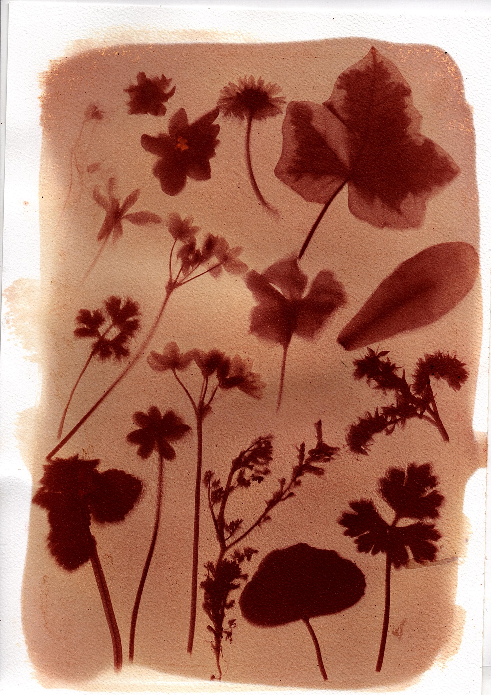
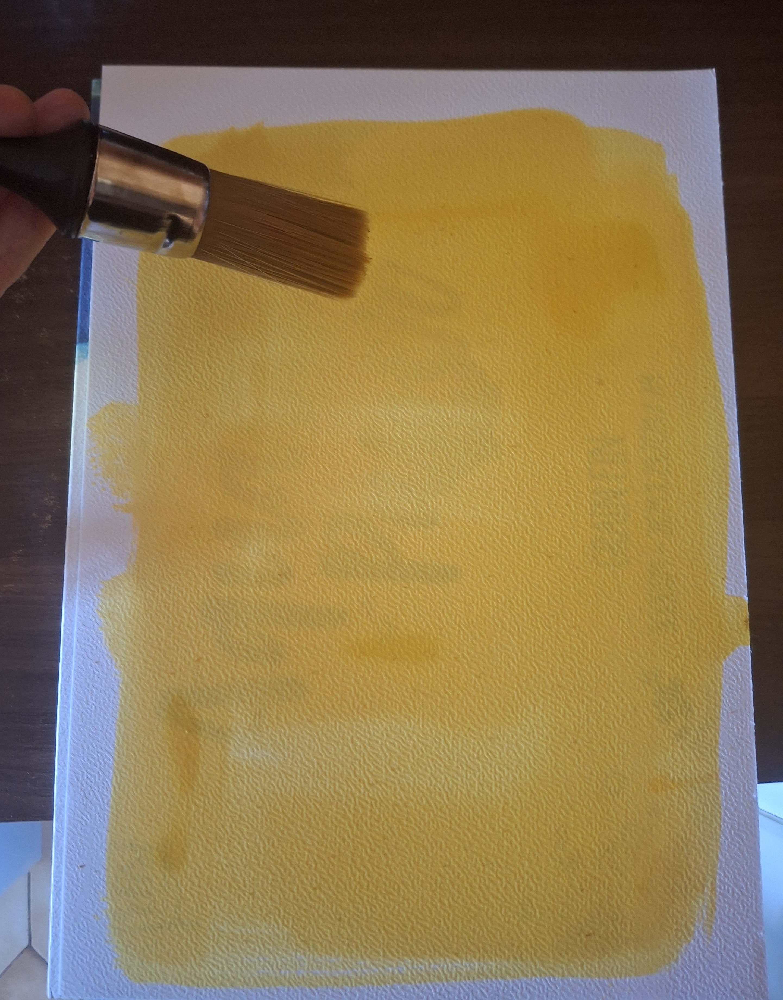
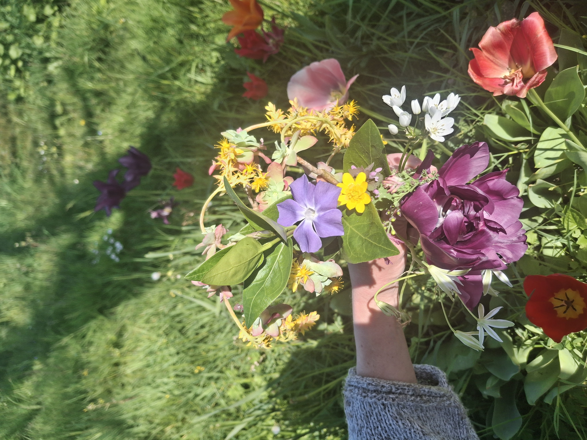
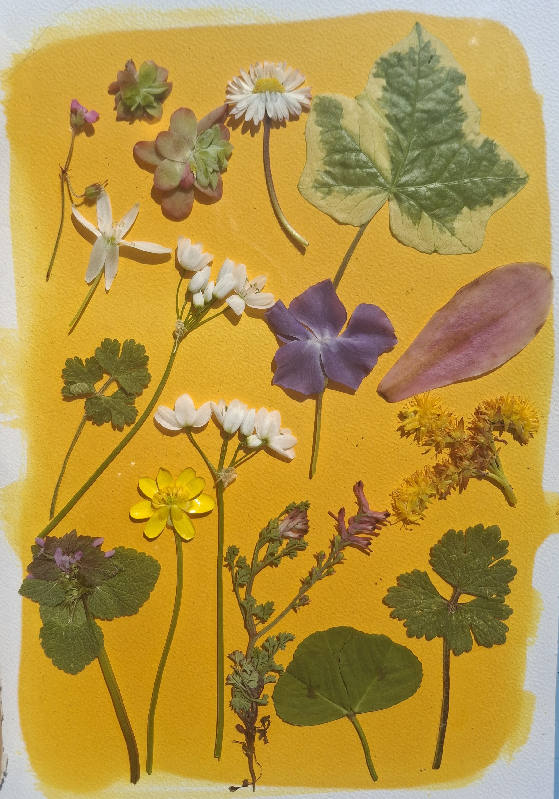
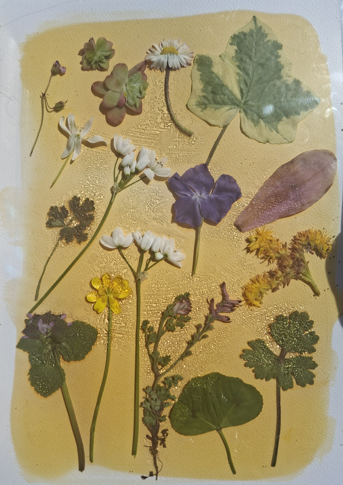
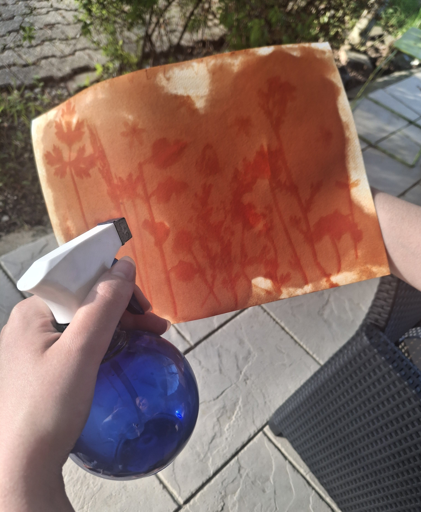

Regarde le printemps s’éveiller sur ta feuille !
À l’occasion de la réouverture printanière des Jardins des Martels le 1er avril 2026, ce kit a été imaginé pour vous inviter à capturer la poésie du lieu par vous-même.

Ce visuel est le fruit de mon travail personnel avec l'anthotype. J'ai réalisé ce tirage en expérimentant avec les pigments naturels du jardin et la lumière du soleil.
C'est cette création originale, vivante et organique, qui a été choisie pour devenir l'image de la campagne et l'affiche officielle de cette réouverture 2026.
Je vous invite aujourd'hui à vivre cette même expérience créative avec ce kit.
Prenez la feuille du kit, déjà imprégnée de pigment vegetal.
clique pour voir la photo

Composez votre cueillette comme un bouquet : feuilles, fleurs, graines... laissez parler votre regard.
clique pour voir la photo

Disposez vos éléments sous une plaque de verre. Au soleil, le jaune s'éclaircit : l'image apparaît.
clique pour voir la photo

Lorsque la feuille est devenue plus claire, retirez délicatement vos éléments végétaux.
clique pour voir la photo

Vaporisez un mélange d'eau et de bicarbonate jusqu'à ce que l'image se révèle complètement.
clique pour voir la photo
